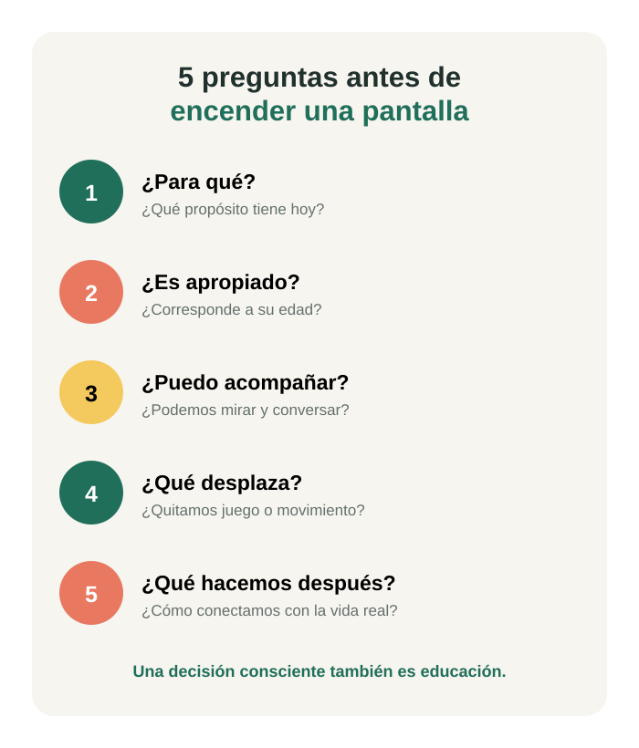

RECURSOS EDUCATIVOS
Una infografía propia para usar en casa o en el aula, y las fuentes verificadas en las que se apoyan las entradas de este blog.
RECURSO PROPIO
Una guía visual para pasar de una decisión automática a una decisión educativa. Puede imprimirse y colocarse en un lugar visible de la casa o del salón.

ENLACES RECOMENDADOS
Orientaciones para comprender el lugar de la tecnología en los primeros años de vida.
Visitar recurso →Recursos en español para acompañar el uso de medios digitales en la vida familiar.
Visitar recurso →Recomendaciones sobre actividad física, comportamiento sedentario y sueño en la primera infancia.
Visitar recurso →REFERENCIAS
Fuentes citadas en las entradas de este blog, en formato APA (7.ª edición).